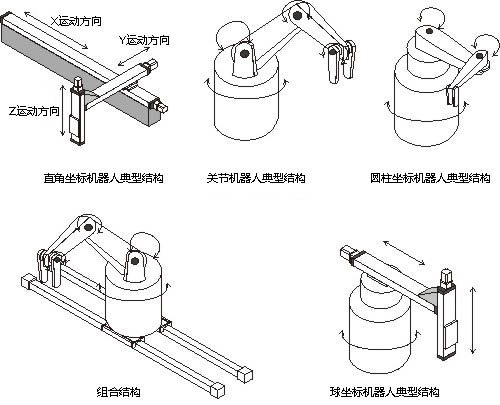

1.1了解工业机器人
1.1.1 工业机器人分类及应用
工业机器人一般是指用于机械制造业中代替人完成大批量、高质量要求工作的机器人，如汽车制造、摩托车制造、船舶制造、电子及化工等行业自动化生产线中的搬运、焊接、切割、装配、喷涂、码垛等作业机器人。国际上关于机器人的分类目前没有统一标准，一般控制方式、自由度、结构、应用领域进行分类。由于机器人还在不断的完善和发展中，按不同的分类方式机器人分类的种类也不相同。
1.按臂部的运动形式分
按臂部的运动形式分为以下几类，如下图所示：
（1）直角坐标型的臂部可沿三个直角坐标移动；
（2）关节型的臂部有多个转动关节；
（3）圆柱坐标型的臂部可作升降、回转和伸缩动作；
（4）组合结构可以实现直线、旋转、回转、伸缩；
（5）球坐标型的臂部能回转、俯仰和伸缩。

2、按执行机构运动的控制机能分
按执行机构运动的控制机能，可分为点位型和连续轨迹型。
点位型：控制执行机构由一点到另一点的准确定位，适用于机床上下料、点焊和一般搬运、装卸等作业。
连续轨迹型：可控制执行机构按给定轨迹运动，适用于连续焊接和涂装等作业。
3、按程序输入方式分
按程序输入方式分为有离线输入型和示教输入型两类。
离线输入型是将计算机上已编好的作业程序文件，通过RS232串口或者以太网等通信方式传送到机器人控制系统。
示教输入型的示教方法有两种：一种是由操作者用手动控制器(示教操纵盒)，将指令信号传给驱动系统，使执行机构按要求的动作顺序和运动轨迹操演一遍；另一种是由操作者直接移动执行机构，按要求的动作顺序和运动轨迹操演一遍。
示教输入程序的工业机器人也称为示教再现型工业机器人。
4、按应用领域分类
工业机器人按应用领域分类可分为搬运机器人、装配机器人、上下料机器人、焊接机器人、码垛机器人、喷涂机器人等。